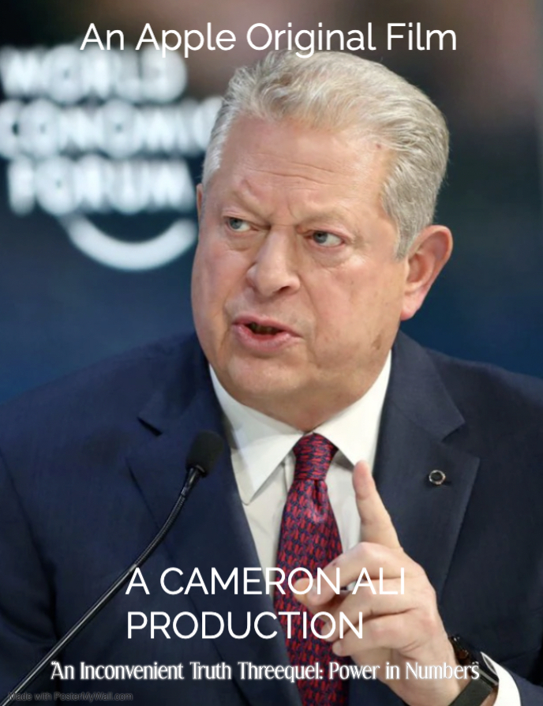

“An Inconvenient Truth Threequel: Power in Numbers”
Stream it on Apple TV+

Cameron Ali’s masterfully created film takes a look at the history of Al Gore’s legacy as an ardent environmentalist. The 45th Vice-President under President Bill Clinton, Al Gore passed away two years ago at the age of 102 due to natural causes. It examines his years in politics such as his term as Vice-President and his historic presidential run in 2000.
It pays particular attention to his negotiation of the Kyoto Protocols and attempts to prod the GOP-held Senate at the time to agree to the contents of the treaty. In the majority of the time, the documentary focuses on his signature Global Warming Marshall Plan, a plan that would include rich and poor countries into a collaborative effort to fight climate change, which was meant to fix the mistakes that made the Kyoto Protocols and Paris Agreement fail. It was introduced in 2030, but was not ratified until 2035. Despite not holding political office, Gore made a forceful effort in ensuring a majority of countries and developing countries agreed to the plan. This monumental effort took years of planning and traveling, taking Gore from the extreme-weather torn country of Fiji Island to the drought-inflicted Nicaragua.
Of course, the movie takes a look at one of the craziest moments in UN history of when representatives from third-world countries walked out as Al Gore spoke on the shared responsibility all nations face in saving the planet, something they did not take lightly given how a large majority of historic carbon emissions came from industrialized countries. It then turned into a shouting match as representatives from richer nations accused poorer nations of continuing deforestation practices for biofuels at a time when the USA and other European countries are looking to use forests as carbon sinks.
An Inconvenient Truth Threequel: Power in Numbers also examines the lives of several American families, who were immensely impacted by climate change, over the course of several years. A common theme among the groups was a sense of frustration of the inability of politicians and nations to commit to climate policies. While Gore’s Global Warming Marshall Plan never passed, his historic legacy as a consensus builder, at times rising above the politics of the moment, makes this film worthwhile to watch.
“Climate State”
Stream it on Netflix
Premiered at the Sundance Film Festival to rave reviews, this documentary focuses on three high school students as they participate in a summer camp called Climate State hosted by the California state government in Sacramento. The point of Climate State was for 100 students interested in politics to create a national government in the context of the current climate challenges in 2052. The program was designed to mentor the next generation of leaders. The first participant is Ben Bernard, a wealthy white American from Orange County with generally conservative views. In an introductory statement, Ben makes it clear of his opposition to his city’s legislation that currently tracks and charge families and restaurants for food waste. Jennifer Chen is a wealthy Asian American from Santa Cruz with moderate political views. Lastly, there is John Garcia, a soft-spoken Hispanic from a blue collar family in Los Angeles with progressive views and a member of his local Sunrise Movement. The film looks at how these three people split on ideological lines into three political parties — the conservative Union Party, the libertarian Identity Party, and liberal Socialist party — in how to adapt to current climate challenges humans face while dealing with the widespread economic inequality that global warming only worsened. In one such debate, Ben disparaged the Global Marshall Plan’s requirement for richer nations to transfer technological advancements like industrial carbon capture and >75% efficient solar panels, claiming investors will see no point in funding new climate technology projects if companies’ products are donated to poor nations. While Jennifer voiced her agreements, John pointed out this plan has helped reduce the growing economic divide between poor and rich nations, which has kept millions of people out of poverty. This film dives deep into political polarization surrounding climate policies that already exist on Capitol Hill, and examines whether these students could come to a compromise that would benefit their future.
“Planet Earth 5”
Stream on Peacock
In this participatory documentary series, filmmaker David Attenborough Jr. travels across several different continents, looking at the effects of climate change on people’s lives, highlighting the glaring differences in rich and poor countries in their abilities to preserve the environment against an onslaught that is climate change. In France, farmers in the Champagne wine regions are actually benefiting from the higher summer temperatures as it has made grapes riper than normal as Attenborough Jr. noted as he sipped one such wine. Meanwhile, in Ecuador, Attenborough Jr. looks into the devastating effects of climate change on the coral reefs and the animals that lived there like the famous clown fish. For the past decades, Central American countries were hesitant to spend money on environmental protections as governments were distracted from climate fueled conflicts and many relied on extracting biofuels for energy as many industrialized countries like the United States restricted fossil fuel exports. The glaring difference between France and Ecuador highlights the underlying political message of this nature documentary: many rich countries are fighting climate change, but at the expense of poorer nations. As Attenborough Jr. puts it, “it seems that nations have adopted an ‘every man for himself mentality’ to fight climate change and this has catastrophic effects on the natural world.”
Three Films to Watch Now